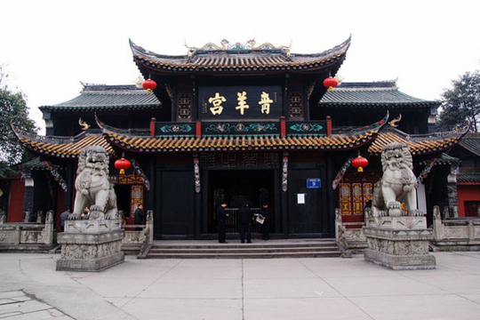
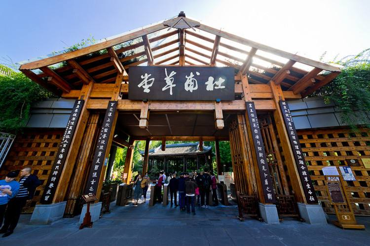
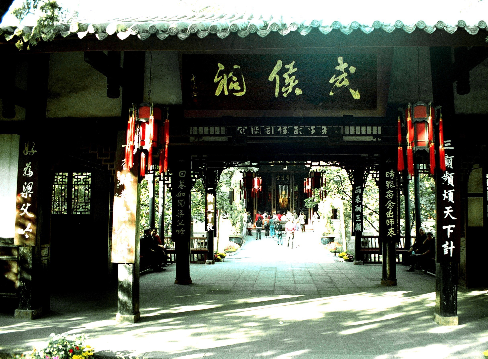
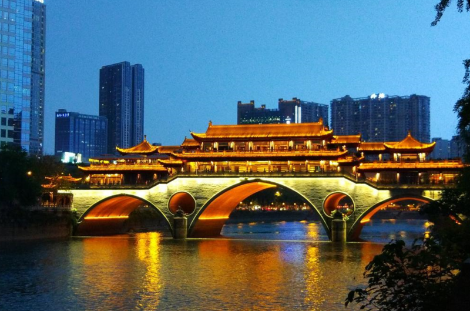

| Day 1 |
|---|
| Day 2 |
| Day 3 |
| Day 4 |
| Day 5 |
| Day 6 |
Day 4: 成都
청양궁 / 青羊宫 / AM8~AM10
청두 여행의 첫 아침이다. 숙소 근처에서 든든하게 아침을 먹고 청양궁을 보러 가보자. 청양궁은 도교 사원인데, 청두에 있는 사원들 중에서 가장 오래된 사원이라고 한다. 청두에서 가장 유명한 사원이니 한번쯤 방문해 주도록 한다.
두보초당 / 杜甫草堂 / AM10~PM12
그 다음으로 가볼곳은 당나라 시대 이태백과 더불어 중국 최고의 시인이였던 두보가 유배되었을 때 살았던 고택인 두보초당이다. 중국 최고의 시인이 살았던 곳이니만큼 풍경이 아름답고 분위기가 차분하다. 한번 들려 시인의 삶을 체험해 보도록 하자.
무후사 / 武侯祠 / PM3~PM4
다음에 가볼곳은 삼국지 제걀량의 사원인 무후사이다. 가기 전 근처 음식점에 가서 점심을 먹은뒤 이동해주도록 하자. 청두는 삼국지 시대때 촉나라의 수도로써 유비의 세력들이 거점을 잡았던 곳이다. 촉나라에서 가장 유명한 제갈량을 모시는 사원이니 한번 가서 구경하면서 삼국지의 맛을 느껴보자.
진리거리 / 锦里 / PM5~PM7

천천히 무후사 관람을 하다 배가 고파지면 바로 옆에 진리거리로 가주도록 한다. 진리 거리는 촉한 시대의 모습을 재현해 놓은 곳으로 사람은 매우 많지만 분위기가 멋진 곳이다. 천천히 구경도 하고 맛있는 것도 먹어보자.
구안교 / 九眼桥酒吧街 / PM7~PM9
진리거리까지 구경을 마쳤으면 숙소에 들어가 쉬어도 되고, 피곤하지 않다면 구안교로 산책을 떠나보자. 구안교는 야경이 멋진 다리인데 거기까지 강 따라서 산책하기가 매우 좋다. 또 구안교에는 분위기 좋은 음식점이 많이 있으니 야식도 먹어주도록 하자.